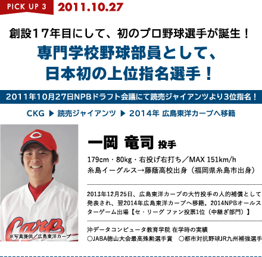

歴史
- 1995年11月
-
硬式野球部発足
ソフトマン教育一筋に、永年の伝統と実績を誇る本学院が、「スポーツを通じて社会人としての人間形成の向上」を目指して硬式野球部を結成し、1995年11月、日本野球連盟より認可承認を受け、専門学校として日本で4校目、九州地区では12番目（いずれも当時）となる、社会人野球チームとなりました。九州初の専門学校の参加に、全国の期待と注目を集めました。なお、設立時に（株）沖データ様（当時）の協賛を得たことを記念し、チーム名を「沖データコンピュータ教育学院」としました。
- 2010年5月
-
第40回記念JABA徳山スポニチ大会優勝
創部以来、初の優勝を飾りました。専門学校が社会人野球（日本野球連盟）の公式大会で優勝する事は、初の快挙であり、本学院にとって大きな自信になりました。また、今大会で一岡竜司投手（藤蔭高）・梅澤晃平投手（福工大城東高）両投手の活躍や、野手では三丸大地選手（鎮西学院高）・鳥羽龍之介選手（常磐高）・眞鍋馨選手（福岡工高）による4試合5本塁打という好調な打線が印象的でした。
- 2011年10月27日
-
創設17年目にして、初のプロ野球選手が誕生

- 2018年4月30日
-
第48回JABA徳山水泳大会優勝
- 1995年11月
-
専門学校チームとして日本で4校目
- 1996年4月
-
硬式野球部創部 1期生入学
監督（初代） 山口善生 就任
九健怡土グラウンド・曽根球場・西部運動公園 等を拠点に練習
初企業チームオープン戦 ＶＳ九州三菱自動車（平和台球場）
都市対抗野球九州地区予選 初出場
日本選手権九州地区予選 初出場
- 1997年
-
硬式野球部創部 1期生入学 監督（初代） 山口善生 就任
九健怡土グラウンド・曽根球場・西部運動公園 等を拠点に練習 初企業チームオープン戦 ＶＳ九州三菱自動車（平和台球場） 都市対抗野球九州地区予選 初出場 日本選手権九州地区予選 初出場
- 2000年４月
-
企業チーム選手輩出 第１号
・中村誠 【日産自動車九州】 1期生 ・松本浩一郎 【大分ハーキュリーズ】 1期生
創部5周年
歴史
- 2003年6月
-
第74回 都市対抗野球大会九州地区予選
企業チーム初勝利 ＶＳ沖縄電力（新大分球場）
9月 第36回 福岡県会長杯 準優勝 ・敢闘選手賞 野中信也
- 2004年
-
3月 第37回 福岡県会長杯 準優勝 ・敢闘選手賞 永光広大
9月 第38回 福岡県会長杯 準優勝 ・敢闘選手賞 中村誠 ・首位打者賞 津村英康
11月 総監督（二代目） 藤田学 就任 - 2005年
-
6月
- 2004年
-
4月 第49回 ＪＡＢＡ岡山大会
企業チーム初勝利 ＶＳ伯和ビクトリーズ（岡山市営球場） 創部10周年
9月 第38回 福岡県会長杯 準優勝 ・敢闘選手賞 中村誠 ・首位打者賞 津村英康
11月 総監督（二代目） 藤田学 就任 - 2010年
-
3月 第47回 福岡県会長杯 準優勝・敢闘選手賞 村上準基
5月第40回記念ＪＡＢＡ徳山スポニチ大会初優勝 （専門学校史上初） ・最高殊勲選手賞 一岡竜司 創部15周年
- 2011年
-
10月 社会人野球福岡県チャリティー大会 準優勝 第82回 都市対抗野球大会補強選手として2名選出される ・ＪＲ九州（一岡竜司／三丸大地） 京セラドーム大阪 初のプロ野球選手 輩出 ・読売ジャイアンツ ドラフト3位指名 一岡竜司 一岡竜司後援会発足
- 2011年
-
10月 社会人野球福岡県チャリティー大会 準優勝 第82回 都市対抗野球大会補強選手として2名選出される
ソフトマン教育一筋に、永年の伝統と実績を誇る本学院が、「スポーツを通じて社会人としての人間形成の向上」を目指して硬式野球部を結成し、1995年11月、日本野球連盟より認可承認を受け、専門学校として日本で4校目、九州地区では12番目（いずれも当時）となる、社会人野球チームとなりました。九州初の専門学校の参加に、全国の期待と注目を集めました。なお、設立時に（株）沖データ様（当時）の協賛を得たことを記念し、チーム名を「沖データコンピュータ教育学院」としました。
・ＪＲ九州（一岡竜司／三丸大地） 京セラドーム大阪 初のプロ野球選手 輩出 ・読売ジャイアンツ ドラフト3位指名 一岡竜司 一岡竜司後援会発足 - 2016年
-
10月 第1回 防府南基地司令杯 優勝（山口防府南基地Ｇ） ・最高殊勲選手賞 木村寿摩 創部20周年記念式典（八仙閣） 西畑球場土砂災害の為、使用不可 （春日・鳥栖・桧原・西部・曽根にて練習
- 2017年
-
第88回 都市対抗九州地区予選出場（5年ぶり）：鹿児島鴨池 第2回 防府南基地司令杯 優勝2回目（山口防府南基地Ｇ） ・最高殊勲選手賞 柳瀬大
- 2018年
-
5月第48回ＪＡＢＡ徳山スポニチ大会 優勝 （8年ぶり2回目） ・最高殊勲選手賞 仲本千聖 ・首位打者賞 疋田連太郎
ＣＫＧアカデミー（クラブ登録）創設 ・全日本クラブ選手権初出場 ・九州クラブ選手権初出場
- 2019年
-
CKGDOME糸島屋内運動場完成
6月
第90回 都市対抗野球大会補強選手として1名選出される ・Honda熊本（仲本千聖） 東京ドーム - 2020年
-
10月 第91回 都市対抗野球大会 九州地区大会ベスト４ （企業チームに勝利） ＶＳ沖縄電力 ４－１
- 2021年
-
3月 第65回 福岡県野球連盟会長杯 準優勝・敢闘選手賞 仲道翔太
4月 第67回 JABA静岡大会 出場